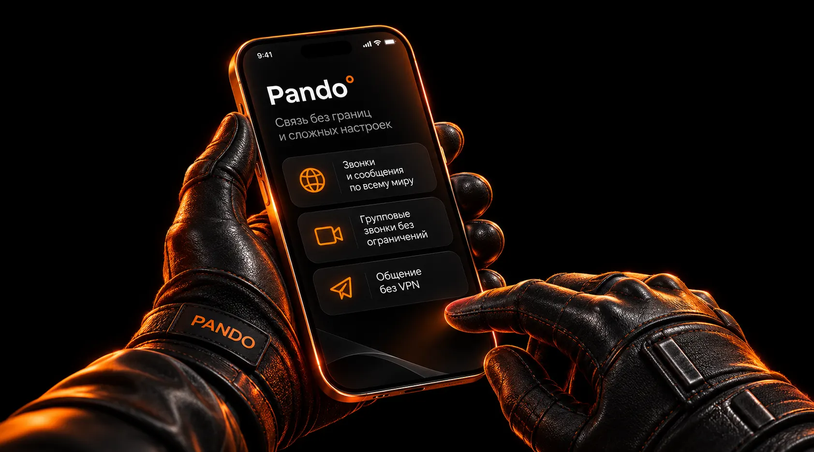

Pando
Три инструмента для доступа и общения
Pando объединяет VPN, видеозвонки и прокси для Telegram. Сервис помогает открывать недоступные сайты, проводить видеовстречи и пользоваться Telegram без VPN.
Pando VPN
Pando VPN шифрует соединение между устройством и интернетом, скрывает IP-адрес и помогает открывать сайты и сервисы, недоступные напрямую.
Видеозвонки P2P
Прямое соединение между участниками разговора. Создание видеозвонков и подключение к ним без регистрации и установки дополнительных приложений.
Всё для разговора и совместной работы
Видеозвонки Pando поддерживают общение, проведение встреч и демонстрацию материалов с разных устройств.
Telegram без VPN
Прокси Pando помогает восстановить доступ, если Telegram не открывается, работает медленно или возникают проблемы с соединением.

Подключение прокси в два клика
Доступ и общение без лишних действий
Три инструмента в одном сервисе
VPN, видеозвонки и прокси для Telegram.
- 01
Связь без затрат
Доступ к возможностям сервиса без оплаты.
- 02
Без анкет и паролей
Работа без регистрации и создания аккаунта.
- 03
Всё готово к работе
Простой запуск без сложных настроек.